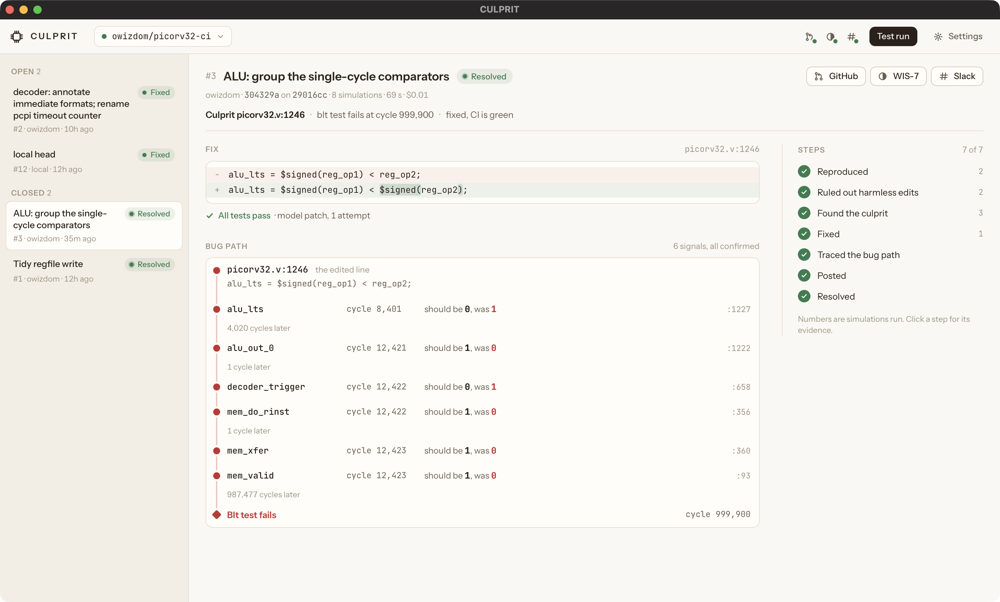
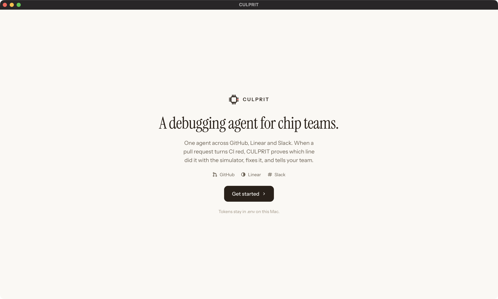
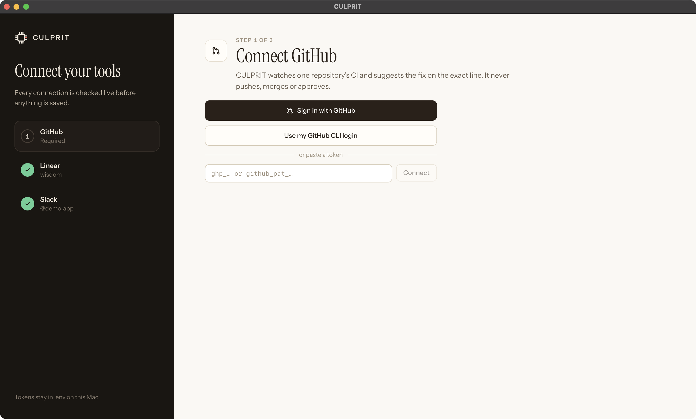

One agent across GitHub, Linear and Slack. When a pull request turns the simulation tests red, CULPRIT proves which line did it with the simulator, fixes it, and tells your team.

Chips are written as code and checked by simulation. When a change breaks a test, someone reads logs and waveforms until the guilty line turns up. It is the most expensive kind of waiting in chip design.
of IC and ASIC projects reach first-silicon success.
Siemens / Wilson Research Group, 2024 functional verification studyof a verification engineer's time goes to debug, the largest single share.
Wilson Research Group study, as cited by Sigasiis usually the cause. CULPRIT names it, with the simulator runs that prove it.
Measured on 58 chip bugs, see the proof belowEvery claim CULPRIT makes is tagged: CONFIRMED when a simulator or a netlist proved it, PROPOSED when it is only a suggestion.
A pull request breaks the chip's simulation tests. CULPRIT re-runs them on the pull request and on its base to make sure the failure is real.
Edits that cannot change the circuit are ruled out with zero simulations. The rest are undone one at a time until one edit is proven guilty.
A fix that keeps the author's change counts only once every test passes. It also traces, clock cycle by clock cycle, how the bug travelled through the CPU.
The fix lands as a suggestion on the pull request line, an issue in Linear and a thread in Slack. When CI goes green, the loop closes.
Connect each app from the first-run screen. Every connection is checked live before anything is saved, and tokens stay on your machine.
Watches your CI and suggests the fix on the exact line.
One issue per broken pull request, written as a short report.
One thread per pull request in your team's channel.


Each case is a pull request on the PicoRV32 RISC-V CPU with its true culprit known. CULPRIT is compared with the obvious alternative: Claude alone, given the same pull request and log but no simulator.
| Measure | CULPRIT | Claude alone |
|---|---|---|
| Culprit edit found | 58/58 | 51/58 |
| Fix passes every test | 58/58 | 51/58 |
| Wrong blame (lower is better) | 0/65 | 5/65 |
| Same grades over three runs (30 cases) | 30/30 | 27–29/30 |
| Real upstream bugs fixed the way the author did | 2/2 | 2/2 |
| Correct when the chip is not at fault | 7/7 | 7/7 |
Every culprit and fix CULPRIT offers has passed the simulator. Claude alone blamed the wrong edit 5 times and 7 of its fixes do not pass, and its answer does not say which. The 65 cases are 30 hand-built pull requests and 35 generated ones that hide a real bug among harmless edits; the two upstream bugs come from the PicoRV32 author's own fix history. Icarus Verilog 12 and 13 give byte-identical simulator logs on all 31 runs.
Limits, measured too: the test suite catches 37 of 40 seeded single-token mutants, and a bug it misses is invisible to CULPRIT. At this size the intervals between the two still touch. Every table: evals/results/REPORT.md.
The design's own regression in Icarus Verilog, netlists from Yosys, and firmware built with the RISC-V GCC toolchain. Today it targets PicoRV32; the loop is design-agnostic.
Only the repair of lines that cannot simply be restored. Its patch is accepted only after the simulator passes it; otherwise it is labelled a proposal.
In a file in your user data folder, readable only by you. Settings shows each connection's live status, lets you disconnect, and logs you out.
Review comments and commit statuses on the watched repository, its own Linear issues, and messages in one Slack channel. Everything else is refused before any network call.
The firmware stops at the first failing test, a netlist proof holds for the testbench's parameters only, a bug the regression misses is invisible to CULPRIT, and the evidence so far covers one design, PicoRV32.
Yes. The code, the 30-case corpus and the evaluation scripts are in the repository.
One command on macOS or Windows. The first run checks your chip tools, then walks you through GitHub, Linear and Slack.
uv tool install git+https://github.com/owizdom/culprit culprit
Needs uv (Python 3.12), plus Icarus Verilog and Yosys: Homebrew on macOS, OSS CAD Suite on Windows.